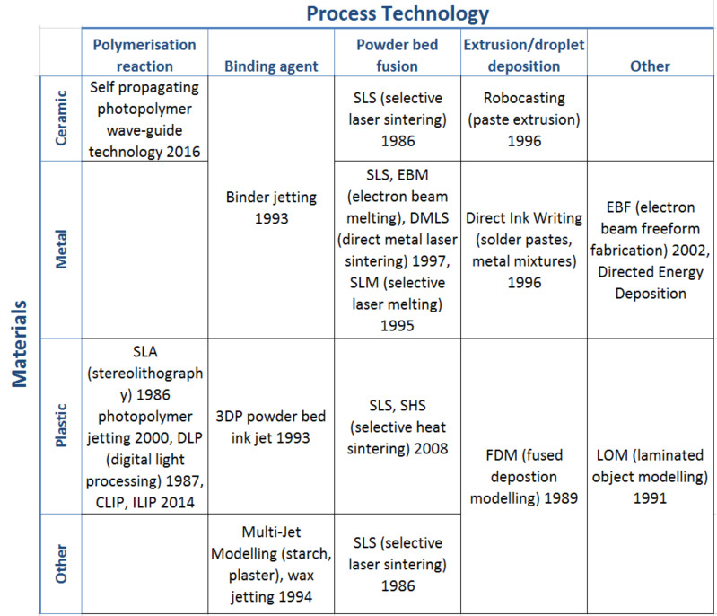
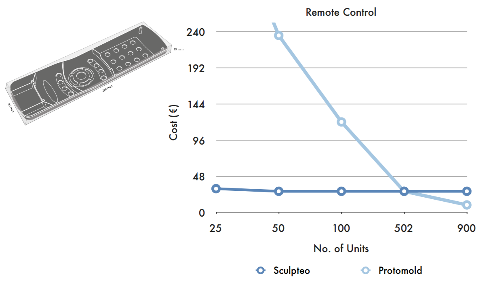
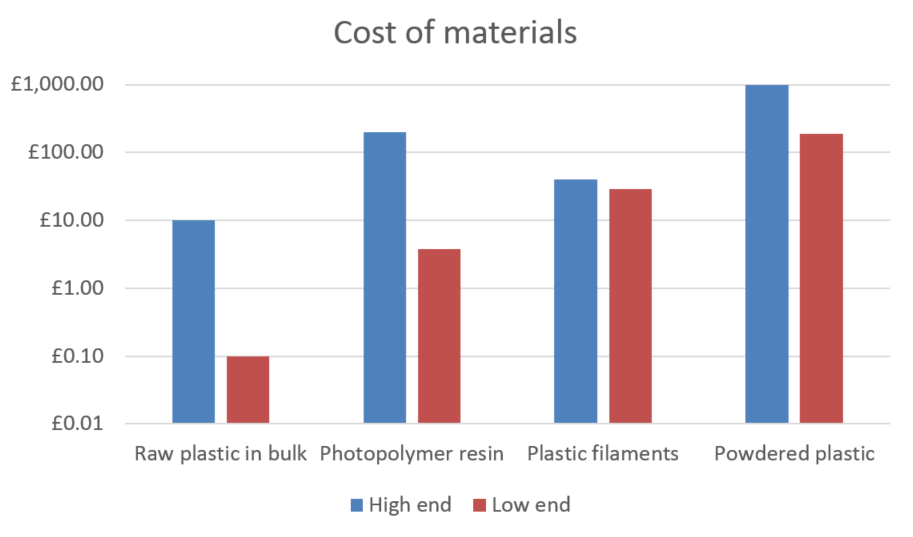
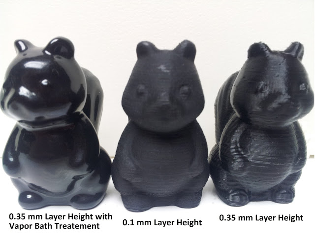
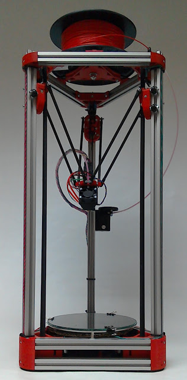
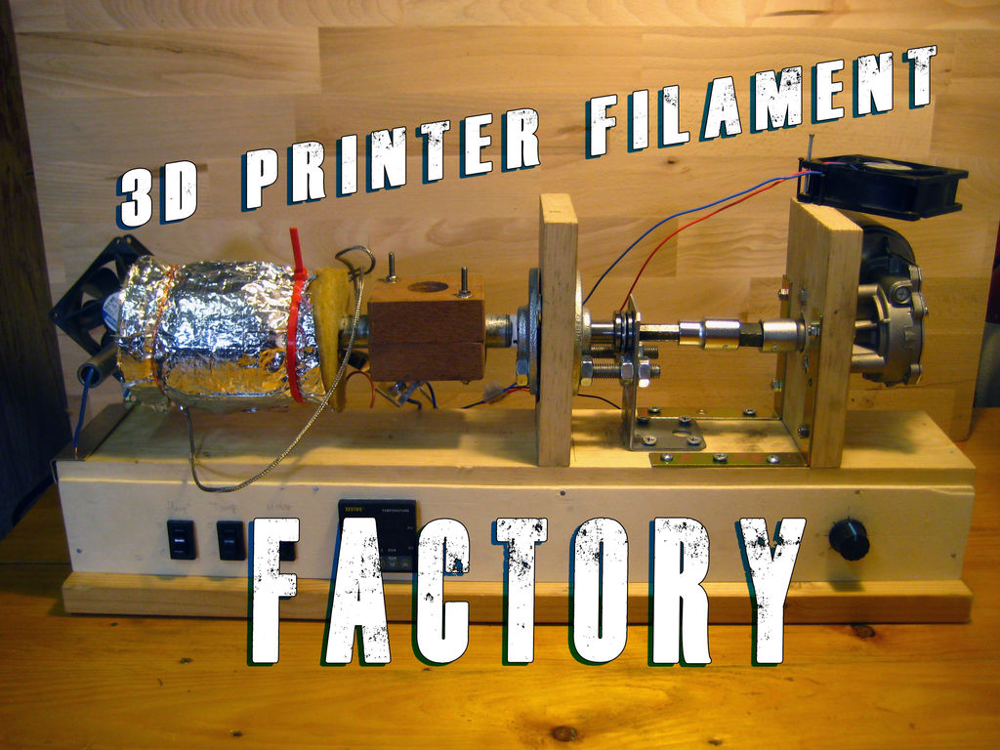
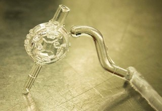

Additive Manufacturing Is Not Going To Save The World (Sorry)
What are we talking about here?
Additive manufacturing, more popularly known as 3D printing, isn't just one thing. It describes a vast range of technologies. What they have in common is that they use repeated computer controlled deposition or binding, layer by layer, of materials to build up a product. The additive technologies have improved to the point where some can be used to produce final parts for end users as well as prototypes and ‘looks-like’ models. Real customers have been found for 3D printed products, especially in the medical sector. Hearing aid shells, dental braces, shoe inserts and other low volume, complex, bespoke products are places additive manufacture has an advantage over conventional production as a final production technique. As an enthusiast for additive manufacturing that's really good to see. But there's still a lot of hype and misunderstanding around the technologies. I'd like to clear that up here, in what will (unashamedly) be a bit of a long and ranty post. So strap in!

Additive manufacturing technologies have existed for decades, but the recent development of smaller, more accessible machines has drawn media attention. The vision of a world of distributed manufacture, where the means of production sit on every desktop, is compelling. The technology has been hyped by commentators as the manufacturing tool of the future – something that will “transform our lives”, “revolutionise the global economy” and “change the future of industry”. Enthusiasts advocating for the power of additive manufacturing tend to say things like
"I don’t pretend to be impartial. This is a future I believe in, and I’m one of many working to build it." - Chris Anderson, Makers: The New Industrial Revolution
"3D printing will change the way things are produced more in this century than the industrial revolution did over the last 300 years... Industrial 3D printing will forever change the world as we know it. Are you ready?" - Rick Smith, Forbes
I used to be one of these very excited people. To a certain extent, I still am - there are some wonderful things that only additive manufacturing can achieve, and it really is transforming certain industries. For example, the hearing aid business has undergone a quiet revolution. All hearing aid shell manufacturers now offer personalised shells made by additive processes such as SLA and SLS. Dental implants aren't far behind.
However, the fact is that additive manufacturing is not commercially viable for producing larger numbers of products. For production runs of over around 500, conventional production technologies are far more practical. Additive manufacturing is currently expensive, slow, requires more design time than commonly imagined and constrains production to small batches. Gartner’s Hype Cycle for 3D Printing predicts that both 'Consumer 3D printing' and '3D printing in Manufacturing Operations' will soon come out of the ‘Peak of Inflated Expectations’ and enter the ‘Trough of Disillusionment’ soon.
How far have we gotten toward World Domination?
At the desktop level
There have been game-changing reductions in the cost of less sophisticated machines. This has been driven by hobbyists and open-source developers such as the RepRap project led by Dr Adrian Bowyer. RepRapPro recently became a victim of its own success, closing for business in January and releasing a statement that
"“The market for low-cost 3D printers is now so crowded and so competitive that a small specialist company like ours cannot expand. So, because we are not bankrupt and we do not have any debts to pay, we have chosen to stop now while we are ahead and to concentrate on other activities.” - RepRapPro
A message from Dr Bowyer on the RepRap.org forums explains further that
“this great flowering of small companies (all essentially based on the RepRap Project) making commercial life difficult for each other was pretty-much what I predicted when I started the Project… But we expected it to take decades, not four years.”
A typical small desktop FDM machine now costs in the region of hundreds of pounds. Profit margins on these hobbyist machines have eroded and no further large drops in price may be reasonably expected.
Desktop printers were created that would work ‘out of the box’ without the need for great additive knowledge and DIY skills. Firms like MakerBot and Ultimaker targeted those who want to access the technology but do not have the skills or time to build and maintain their own printers. However, this new generation of machines is still not reliable. MakerBot took an ‘Apple’ approach to development and hid the complexity of their product from users, closing the source code and preventing user modifications. Sadly, desktop printers are not yet reliable enough to be operated by unskilled users without significant risks of failure. MakerBot is now facing a class action suit about failures of its ‘Smart Extruder’ and has been called a “dead company walking” after laying off its manufacturing staff, closing its retail locations and outsourcing all production to China. (Update: the class action lawsuit was dismissed but 3dPrintIndustry is still calling the company "a shadow of its former self").
"Anyone who has ever been to a hackerspace has seen a MakerBot printer, but that printer was broken." - Brian Benchoff, HackaDay
Whether using a pre-assembled machine or a kit made from open-source parts, what can be printed with a desktop FDM (fused deposition modelling) machine is mostly limited to plastic trinkets that “looks like I bought it in a panic at a jumble sale for 10p” as a journalist observed. A typical quote from a ‘Maker’ I interviewed at Newcastle MakerSpace was “I do spend more time trying to fix the printer than printing things”. An insightful member of the ‘Maker’ community Dominic Morrow pointed out in an interview with me for my Masters project a couple years back
“In our community – the maker community and hackspace community – 3D printing isn’t about 3D printing, it’s about building a 3D printer.”
I've experienced this myself and found it quite frustrating. While I generally focused on making things and found the process frustrating on most machines, for many 'makers' the quality of the output is considered secondary to the pleasure of building and tinkering with the printers themselves.
At the industrial level
Prototyping houses such as Shapeways, Sculpteo and iMaterialise have succeeded in popularising the larger, more professional additive technologies. They fill a niche by supplying the ability to print with expensive methods such as DMLS (Direct Metal Laser Sintering), which is not possible as an individual because the machines are so expensive - millions of pounds. However these companies don’t offer anything fundamentally new to manufacturing except for their business model. Their machines can produce higher quality results than the desktop machines and at a larger scale. But they are still slow compared to conventional processes such as injection moulding or milling and they require skilled operation.
Sculpteo released a white paper on the batch size problem recently. For 5 representative parts they compared costs quoted by injection moulding companies Sinomould, Quickpart and Protomould to their own print-costing algorithm for SLS. Injection moulding is a conventonal manufacturing process which involves injecting heated plastic under pressure into a mould. Its costs include start-up costs for tooling, so this process is more expensive than additive manfuacturing at first. But as the number of parts produced increased, injection moulding catches up due to its lower cost per additional part.

The average break-even point was 436 units. After that, injection-moulding was less expensive per part.
“Should the surface finish and material properties of the 3D printed part serve the needs of the desired application, then 3D printing remains an economical manufacturing method for up to 500 unit production runs (dependent on unit size)." - Sculpteo
And bear in mind that Sculpteo had every incentive to make sure this figure was as good as possible! As an additive manufacturing bureau they naturally want to portray their technologies favourably.
Better software has also improved printing results; improvements in slicing engines, better design of support materials, semi-automatic design and placement of struts all contribute toward higher quality prints. Bedrich Benes, an academic at Purdue University, and Radomir Mĕch, from Adobe Systems worked on development of software to improve CAD files. TMĕch explained to me during an interview for my Masters project
“So there are basically two stages. One is that you can detect structural issues. And this can be found somewhere on the market. And the second thing is that you solve them. And you can solve them during the design phase, when you are creating the 3D object. [Or] you can solve them post when the object [is] created.”
Their work has been very useful to the professional 3D printing community in reducing the costly cases where an unprintable part is sent out to be printed. The software they developed can do things like increase the width of a fragile neck on a sculpture, to improve the odds that it will print successfully.
Software can also be useful for lightweighting objects to be 3D printed. ‘Inspire’ software from solidThinking generates optimal organic shapes and struts from given envelopes, minimising material usage and maximising strength in the printed objects. Their case studies showcase the software's ability to reduce weight by 50% or more.
""We are very satisfied with the results achieved. We have realized better designs and could fulfill all structural requirements in a shorter term." - Juan Manuel Romero, Alstom, solidThinking case study.
Although in the Alstom case study time to manufacture was shortened, this was because the iterative cycle of design optimisation was shortened – the actual additive printing process usually still takes longer than conventional casting or milling. As pointed out by ProtoLabs:
“The process of melting metal one ultra thin layer at a time also isn’t terribly fast — our instruments may take a few days to build. For many parts, CNC machining remains the most economical choice.” - Protolabs, Manufacturing Design Tips.
Plunkett Associates, who deal in conventional and additive metal prototyping, explain
“There are limitations to be aware of, slow build speed, restriction of build volumes… support structures are required…these can be difficult to remove.”
This is reflected in the timescales – DMLS takes 2 weeks for Plunkett to turn around, sand casting just one week. Software solves important structural design problems unique to additive manufacturing, but has not enabled any radical improvements in speed.
Fundamental Limits
Speed
Time taken to create an object is proportional to the number of printed layers. This is a more powerful effect than x and y movements in additive technologies. Whether it is a swipe and refresh stroke to lay fresh powder down, the movement of an object in a resin bath or the motion of an FDM extruder, z motion is the most crucial. As Joseph DeSimone says “There are some mushrooms that grow faster than 3D printed parts.”. To print parts quickly, they must be thin, with few layers - not very '3D' at all.
Some like Rob Winker of Stratays will argue that this doesn’t matter much if you are accustomed to leaving the printer running overnight. But this approach fundamentally limits additive manufacturing to small batch production. Imagine being told you could only produce car body panels by leaving the machine running slowly overnight!
Print head speed and acceleration restricts the speed at which the printer can produce each layer. This is a somewhat artificial limit – one can imagine a printer where the head(s) are stationary and a belt is swept underneath at high speed. In DMLS and SLA (selective laser sintering) the problem turns into a raster scanning one – how fast a laser may sweep across a bed of powder or a tank of resin while laying out a pattern.
Fundamental speed restrictions are dictated by the physical properties of print materials that must melt and solidify. Take the example of depositing ABS using a heated extruder nozzle. An elegant study by Stuart Oliver determined the speed limits on PLA for the Ultimaker extruder to be around 8 – 10 mm3/sec for a 0.4mm diameter nozzle. After that point
“the constant excessive push of plastic into the hot end raises the pressure in the molten plastic, making it more likely that the molten plastic, unable to escape the way it is supposed to go, will instead find its way back up … and form a jam”.
This is not only a plastics issue. Currently, “steel powder is quite slow” and “expensive equipment (is) needed for essential post-processing” according to the textbook 'Developments in Rapid Casting'.
Expense
There is a fundamental disconnect between price of hobbyist desktop equipment and the price of professional machines. No hobbyist could to afford to buy or run a metal sintering machine. Print bureaux give more access to the technology, but at a high price of £25+ typically for a small metal part. Regardless of machine, there is little economy of scale in additive manufacture. If an increase in production volumes is needed, manufacturers naturally turn to conventional processes. “Generally the material is expensive to buy, and the process is slow” advises print service bureau 3D Print UK.
There has been enlightening comparison of desktop 3D printers to the bread making machine fad of the '90s – appealing as a novel concept, but not about to replace conventional mass production methods due to cost and inconvenience.
Cost of materials is very high, typically around £35/kg for high quality plastic filaments, and ten times that or more for resins and powders. Some of these materials will inevitably be wasted due to swipe and refresh mechanism operations, support material printing and resin exposure to light. This raises product costs further. Compare this to the raw material prices when purchasing even high quality engineering plastics in bulk and the enduring appeal of conventional methods becomes clear.
 Note this is a logarithmic scale.
“Sadly for every request we have for a full sized Daft Punk helmet, there’s an equal number of disappointed Daft Punk fans out there, when they find out how much it will cost to build” - Nick Allen, Why 3D Printing is Overhyped (I Should Know, I Do It For A Living).
Materials
In general, chemistry must be precisely understood and controlled – particularly as it relates to surface wetting since this controls the height and resolution of layers and interlayer bonding in droplet based printing. High wetting tends to give thinner layers with a stronger bond.
Materials for additive manufacture are peculiarly vulnerable to changes in the environment that have a knock-on effect on print quality. Humidity, ambient temperature, reel storage time and conditions all affect results for plastic prints. Excess humidity causes water absorbent filaments such as nylon to noticeably swell and PLA filament to become more brittle and degrade.
New materials are being developed continually for additive manufacturing. The range now includes ceramics, elastomers, composites and waxes. These materials do not deliver any changes to the speed of manufacture however, and each material has its own unique challenges in printing.
Maintenance and reliability
OEE, Overall Equipment Effectiveness, is used by manufacturing engineers as a measure of the percentage of time equipment is used for making useful products. “World class” OEE for machining centres and other non-continuous processes is about 85%. Continuous, 24 hour/day processes like the extrusion of pipes or beams can achieve 90% OEE or greater. Additive manufacturing tends to fall far beneath this, though it is difficult to gather exact data due to the secrecy of the main players. Additive manufacturing machines are most suited to custom production runs and small order quantities, which brings down OEE metrics further. Due to these restrictions, few final parts are made using additive techniques. Wohlers’ surveys indicate less than a quarter of additive sales are of functional parts. Their data from 2011 indicates around 13% of sales are direct part production. Additive production is still dominated by research and prototyping.
Surface finish and post-processing
A common myth about additive manufacturing is that parts require no assembly or post-processing. In fact, extensive finishing is required to give printed models an appearance comparable to moulded parts. These finishing techniques are considered a 'dark art'.
 Squirrel models finished with actone vapour smoothing by the fine folks at the RepRap blog.
As Matt Griffin explains,
“Makers who have mastered finishing techniques are granted wizard status by fellow 3D practitioners.”
Examples of surface artefacts from additive processes include white marks which can appear after support material is removed, ‘stair stepping’ marks and grainy surfaces. Stair stepping marks are more noticeable on shallower curved surfaces and are “a natural artifact of 3D printing” which cannot be avoided. Parts must often be smoothed, varnished or coloured after printing and will rarely achieve a mirror finish. These problems are not restricted to amateur users – all reputable print bureaux have a disclaimer section about finishing. 3D Print UK point out that these disadvantages are “either ignored or misrepresented by many sources on the internet and elsewhere”
Mechanical properties, accuracy and design
Layerwise construction leads to mechanical weaknesses. These are inherent to the production process and difficult to avoid entirely. The orientation of a part on the build plate has a large and unpredictable impact on its strength and function. In the z direction parts tend to be weaker and can sometimes even be broken apart with bare hands. Thus, manufacturing parts such as springs with demanding mechanical properties additively is difficult.
Accuracy can be a problem – users cannot simply print from a CAD file and expect the dimensions to match up, especially with desktop machines. In theory, printing complete mechanisms such as gearboxes in one piece is possible. In reality, it is often too difficult to be worthwhile even for a professional workshop. 3D Print UK say about SLS
“It is always better to manufacture the parts individually and then assemble them after. Even better, buy off the shelf gears from a supplier and 3D print the box that holds them all together.”
Designers must also account for warping, shrinkage, and laboriously troubleshoot failures. Spencer Wright laments
“DMLS is anything but plug-and-play. Even when a design has been optimized specifically for the process, it often takes dozens of tries before a functional part comes out of the printer. And the process of troubleshooting a failed build — even at the most advanced DMLS shops in the world — still involves a lot of trial and error.”
Limits to the shapes that can be printed
The hype leads many to think that additive manufacturing can make any product. This is incorrect. Mastery of the limitations of the technologies can take a lifetime. Designers must use their knowledge of additive processes to craft appropriate parts, just as they have learned to work with the limitations of each conventional process. The spectrum of difficulty is not linear– similar products can be vastly different to manufacture.
-
2+D printing is relatively straightforward. It restricts model designs to prisms and pyramids. It can be done with less viscous materials such as food substances that tend to spread on printing.
-
Overhangs are more difficult. The critical angle of collapse is different for each material. Holes and hollow structures may be created using overhangs, though not all hollow structures are possible.
-
Bridging across unsupported gaps is the most difficult, yet it is needed to create versatile 3D structures with all the benefits consumers are familiar with. Some materials cannot be bridged and most can only bridge a limited gap length. Some techniques and materials allow unlimited bridging due to inherent support material presence, for instance sintering, but sometimes it cannot be done at all.
Depending on materials, some things are just not possible with current technologies: large parts, very thin wall sections, wires, or completely enclosed parts with no escape holes in powder sintered materials. “For instance, a Klein bottle could be printed in metal – but no matter how you oriented it, there would likely always be support structures stuck inside its fat end.” Interlocking parts or pre-assembled structures are one of the most hyped things about additive manufacture, yet these are not possible in many materials either. Shapeways explain that in steel they cannot produce interlocking or enclosed parts because “While the product is being transferred from the printer to the infusion chamber, it exists in a delicate "green state" which does not support interlocking parts.”
Looking to the Future
It's exciting to think of a line speed, fully additive manufacturing process overcoming these limitations. There are some impressive-looking technologies and products out there that seem to demonstrate the great potential of additive manufacture at true line speed. I'll examine each in turn to determine whether they are truly revolutionary advances, or only incremental ones.
Faster FDM printers?

Delta printers such as the Mini Kossel are a recent development in the FDM arena. These typically offer speeds of up to 320mm/s, compared to 100mm/sec for an average Cartesian FDM set-up. This is because of the way their heads move - instead of x-y-z Cartesian motion the print head is held on 3 tilting arms from above, which requires more processing power from the printer controller to work out motion paths. This is definitely useful but not a game-changing improvement in speed – and begins to run into the fundamental material limits on laying down plastic.
Software improvements are likely to deliver better bed space optimisation, automatic strut placement and strengthening and better processing of CAD files. Hopefully we'll see even better expert software systems to optimise parts for the limitations of additive manufacturing. However, even this would just allow the factors already understood by expert designers to be taken advantage of by ordinary users.
High throughput extrusion heads such as the Volcano from E3D Online may improve print speed for FDM plastics – pushing the bottleneck back to the acceleration the print-head is capable of. “By simultaneously increasing the amount of plastic the hotend can process per second and also increasing the maximum layer height we can gain drastic reductions in print time.” Typical reductions are around 40% compared with a standard 0.4mm hotend. However, there is a trade-off between speed and resolution.
New technology?
Intelligent Liquid Interface technology from NewPro3D and Continuous Liquid Interface Production from Carbon3D are very similar technologies which claim speeds of up to 25 – 100 times faster than conventional stero-lithography. These companies are currently the “hottest startups to come along in the emerging 3-D printing industry” and have already attracted much venture capital funding.
Their (similar) technologies are indeed very promising. The underlying concept is similar to standard stereo-lithography. The operating principle is pulling the printed object out of a bath of liquid that is shielded from the UV cure by a selectively permeable membrane. Oxygen flux through the ‘build window’ is controlled. Oxygen inhibits the cure and UV enables it. This can potentially achieve smooth, ‘layer-less’ construction and very tall parts, fast. Figures from NewPro3D give 4.5 minutes for a standard hollow ball. In comparison the same product will take 180 minutes with Polyjet, 690 minutes with SLA.
This is far faster than any other additive technology, but is it game-changing? There is still a curing time limitation and some concern about the physical properties of the finished resin parts. It is likely the parts will degrade in sunlight as normal SLA parts tend to. Carbon3D has the most compelling data to back up its material development and assuage these concerns. But they admit only a few materials will be eligible for their techniques. There are also valid concerns about vibrations and dust contamination of the feed pool. As experienced analysts pointed out
“3D printer breakthroughs are like battery breakthroughs and cancer cures: there is a new one every week, and yet, remarkably, very few ever make it to market. Of course, progress is being made although a lot of that is much slower than you would imagine” - Is the new Carbon3D Printing Technology a Breakthrough or Just Hype?
Reducing materials costs?
 You too could spend years recreating a piece of industrial plastic handling equipment in your own home!
Locally extruding filament could reduce the large cost of materials for FDM prints and help the environment by recycling plastic. One study says “widespread adoption of in-home recycling of post-consumer plastic represents a novel path to a future of distributed manufacturing” However, this is not straightforward. Any injection moulding engineer will tell you that controlling the quality of plastic feedstock can be very challenging. It is not as simple as regrinding old prints or milk bottles and using them to feed a fresh filament, as suggested in the media. There will be problems with plastic degradation, producing consistently sized filaments, incompatibility of different types of plastics and pigments. Consumers would need to become plastics experts in their own homes. Typical user comments:
Greater co-operation?
As an industry, additive manufacturing as a production technique is still trapped in a dark age of trade secrets and low collaboration. As Spencer Wright says
“a part’s layer boundaries reveal its build orientation, and even with careful clean-up it’s generally possible to tell which surfaces have had support structures removed from them. In short, manufacturing forensics is, with enough experience and care, fairly reliable. And yet orientation and support structure setups are almost always treated as closely guarded secrets.”
No company can overcome all of the additive limitations, but progress may become faster with greater knowledge sharing, following the example of the open-source movements. Indeed, much of the progress on desktop machines was driven by open sharing of information by hobbyists worldwide and the efforts of public-spirited organisations like the Rep Rap Project, which has released all of its designs under the GNU Public License. Perhaps the same will begin to happen with the larger, more industrial machines as well.
Where do we go from here?
Even if there is no great breakthrough in speed over the next few years, there will continue to be promising improvements. Meanwhile, consumers are clamouring for the advantages of additive products, so what can manufacturers do? They should take a measured approach - using the advantages additive technologies can offer, if appropriate to their business, while remaining realistic about the limitations and peculiarities of each process.
Sheer output has never been the strong point of additive manufacturing. It will never beat conventional techniques for a given object in mass production. When producing cans en masse, manufacturers will always benefit from a specifically-designed can-making machine. Additive manufacture is like a Swiss Army Knife – useful for many tasks, but not better for any one task better than the specific tool designed for that task. It gives the advantages of customisation and shorter lead times for individual parts, which leads to ease of prototyping. But it can’t replace the power-tools of conventional mass production for larger scale manufacture.
 Jack of all trades, master of none.
Jack of all trades, master of none.
Consumers, designers and engineers must be educated out of the idea that additive manufacturing will solve everything. It is a powerful design and prototyping tool with some limited production applications. That is all it is. The question to bear in mind is, could the part be made more easily another way? Additive manufacture is seen as ‘sexy’ and is an accessible way to start making things as a beginner (especially with desktop machines). This is often an issue for start-ups and designers who have little experience in the workshop. They tend to focus on additive manufacture as a technology that they can understand. They can use it in producing prototypes and improving their designs. It is intuitive, safe and accessible for beginners familiar with CAD tools. A desktop printer can find a place in a design house where a milling machine might not. However, when it comes to scaling up production designers may fail to progress to the next stage and look at other more suitable production processes such as plastic moulding, die stamping or turning on a lathe.
“Thing is, I’m quite versatile in using bandsaws or mills or things like that. If I make it by hand, I make it properly. But if they can use them (3D printers) they will use them,” - James Beeby, interviewee.
‘MakeSpaces’ and 'HackerSpaces' (like our own one in Cambridge) can help to solve this problem by exposing designers to conventional workshop tools and making them aware of the limitations of additive manufacturing alone. Better education in schools and universities is also crucial, and must wherever possible allow students to get hands-on experience of other tools. Lastly, prototyping houses must do their part to educate the users of their services. A good example of this approach is Shapeways recently publicising Dominik Sippel’s research on the limitations of their EOS SLS technology.
'Cheating'
Example of FoodJet's icing decoration capability
We don't actually need full 3D capability in order to take advantage of additive manufacturing technologies in production. ‘Cheating’ using only 2D+ printing is an entirely valid approach if it delivers what the consumer wants. Many successful ‘3D printing’ companies actually only provide a 2D+ late stage customisation service. For instance, Boomf exploits the high speed of full colour edible 2D printing onto ready-made conventionally produced marshmallows. FoodJet brings 2D+ printing to the food industry with computer controlled graphical decorating, cavity filling and shape depositing. The limit in height means its printers can be integrated onto full-speed production lines. Selective potting and sealing with resins in the electronics industry is another example of successful 2D+ printing.
Co-Design
Makie dolls made through customiser app
Co-design allows customisation within achievable limits and hides inherent compromises from customers. A process which allows users to make some design choices within a constrained space of options. This means people can customise a 3D printed object, but don't have to worry about ending up with something that is unprintable. Companies in this space include MakieLab, whose popular, “free and fun app” allowed customers to design their own dolls “without you having to have any knowledge of 3D modelling or the manufacturing process”, the Music Drop customisable music box and Shapeways' Ring Customiser.
Using additive manufacturing to create just part of the form of the finished product is also a valid approach that takes advantages from both spaces. For instance, Candy Mechanics has made ‘3D printed’ chocolate lollipops in the shapes of people's faces. These use additively manufactured mould templates produced using desktop FDM. Vacuum forming creates the actual mould. The potential to use additive moulds in injection moulding is very exciting – creating custom printed injection moulding tools for lower volume runs or custom production will bridge the gap between personalised batch production and mass production reducing costs and time-to-market. This is already being used for medical device development, which requires many design iterations of small runs of mouldings.
 Medical mouldings already use this technique
A more realistic approach
Klaus Højbjerre at the AM department of the Danish Technological Institute observes
“While some people are obviously blinded by the hype, others are getting their hands dirty working with the technology right now. Not as the grand replacement of every existing manufacturing technology, but rather as complementary technology opening up new possibilities and markets.”
These areas, not the hyped idea of fully replacing all high-volume production with additive techniques, are where the most exciting and realisable advances will take place over the next few years. Over-enthusiasm about additive manufacture obscures these facts and leads to disillusionment and a lack of real progress. By keeping our feet on the ground and maintaining a clear understand of what is suitable for 3D printing and what isn't, we can really get somewhere.
Happy printing!
Click to read and post comments